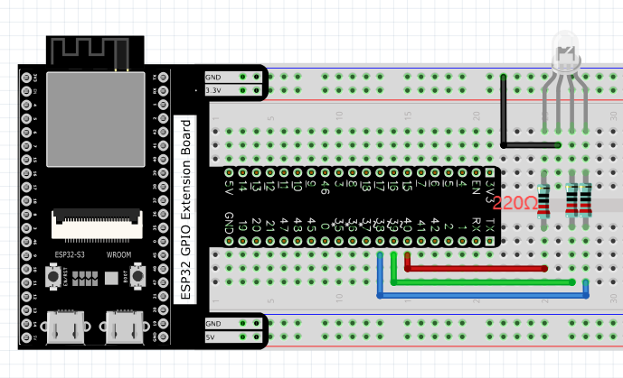

1.6 Tilt Switch
In this chapter, we will learn how to control a RGB LED. It can emit different colors of light. Next, we will use RGB LED to make a multicolored light.
Project 5.1 Random Color Light
In this project, we will make a multicolored LED. And we can control RGB LED to switch different colors automatically.
Component List
ESP32-S3-WROOM x1
GPIO Extension Board x1
830 Tie-Points Breadboard x1
LED-RGB x1
Resistor 220Ω x3
Jumper Wire x4
Component knowledge
RGB-LED
Connect
Code
We need to create three PWM channels and use random duty cycle to make random RGBLED color. Move the program folder “Super_Starter_Kit_for_ESP32_S3/Python/Python_C odes” to disk(D) in advance with the path of “D:/Micropython_Codes”.
Open “Thonny”, click “This computer” >> “D:” >> “Micropython_Codes” >> “05.1_Random ColorLight”and double click “RandomColorLight.py”.
05.1_RandomColorLight

Click “Run current script”, RGBLED begins to display random colors.
The following is the program code:
from machine import Pin,PWM
from random import randint
import time
pins=[38,39,40]
pwm0=PWM(Pin(pins[0]),10000)
pwm1=PWM(Pin(pins[1]),10000)
pwm2=PWM(Pin(pins[2]),10000)
def setColor(r,g,b):
pwm0.duty(1023-r)
pwm1.duty(1023-g)
pwm2.duty(1023-b)
try:
while True:
red = randint(0,1023)
green = randint(0,1023)
blue = randint(0,1023)
setColor(red,green,blue)
time.sleep_ms(200)
except:
pwm0.deinit()
pwm1.deinit()
pwm2.deinit()
Project 5.2 Gradient Color Light
In the previous project, we have mastered the usage of RGB LED, but the random display of colors is rather stiff. This project will realize a fashionable light with soft color changes.
Component list and the circuit are exactly the same as the random color light.
Using a color model, the color changes from 0 to 255 as shown below.

In this code, the color model will be implemented and RGBLED will change colors along the model. Open “Thonny”, click“This computer” >> “D:” >> “Micropython_Code s” >> “05.2_GradientColorLight” and double click “GradientColorLight.py”.
05.2_GradientColorLight
The following is the program code:
from machine import Pin,PWM
import time
pins=[15,2,0];
pwm0=PWM(Pin(pins[0]),1000)
pwm1=PWM(Pin(pins[1]),1000)
pwm2=PWM(Pin(pins[2]),1000)
red=0 #red
green=0 #green
blue=0 #blue
def setColor():
pwm0.duty(red)
pwm1.duty(green)
pwm2.duty(blue)
def wheel(pos):
global red,green,blue
WheelPos=pos%1023
print(WheelPos)
if WheelPos<341:
red=1023-WheelPos*3
green=WheelPos*3
blue=0
elif WheelPos>=341 and WheelPos<682:
WheelPos -= 341;
red=0
green=1023-WheelPos*3
blue=WheelPos*3
else :
WheelPos -= 682;
red=WheelPos*3
green=0
blue=1023-WheelPos*3
try:
while True:
for i in range(0,1023):
wheel(i)
setColor()
time.sleep_ms(15)
except:
pwm0.deinit()
pwm1.deinit()
pwm2.deinit()